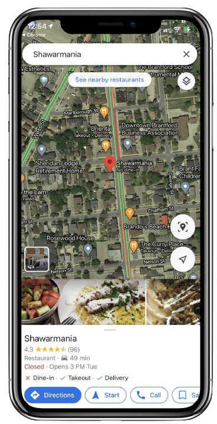
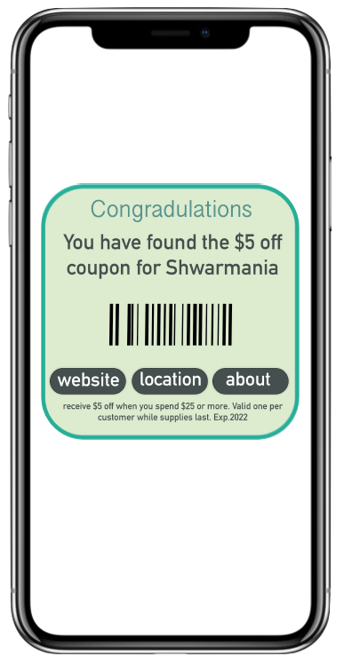
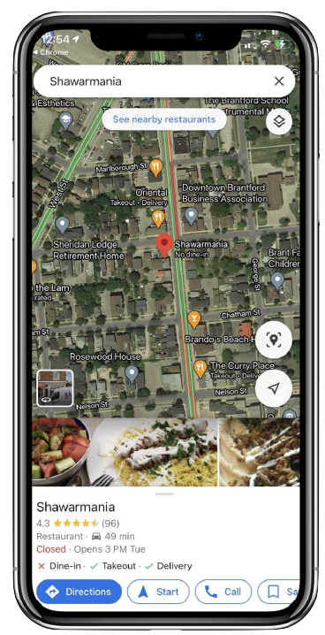
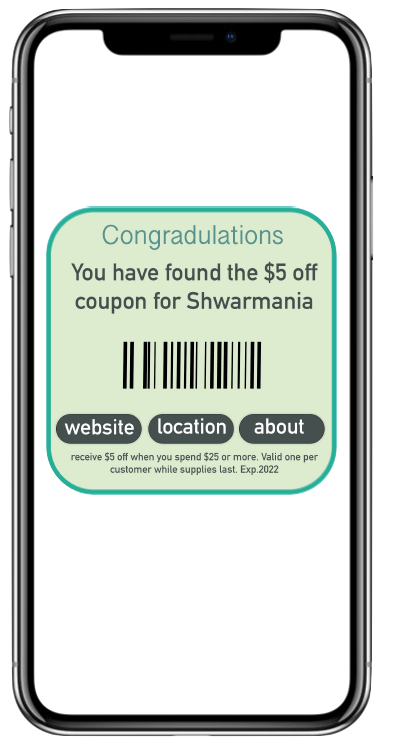

The goal of this particular group project was to create a speculative design that engages the somatic experiences (visual, auditory, haptic and kinaesthetic) that humans encounter through sight, hearing, touch, and motion. Our group was required to align with the Brantford BIA (Downtown Brantford Business Association) Strategic Plan, a plan that aims to revitalize and maintain a dynamic local community, and promote the area of downtown Brantford as a business and shopping destination. With these boundaries in mind, we worked to design a 3D speculative haptic tool that is shaped around the QR code.

Tinkercad. 
Adobe Illustrator. 
Businesses are having difficulty connecting with the local community within downtown Brantford.
Brantford citizens: How can I find the right business for my needs?
Brantford businesses: How can we reach our community more effectively?
Our Question: How might we utilize accessible and multisensorial technology to engage the Brantford community with local businesses?
Each downtown Brantford business will have a 3D QR code mounted on their wall (outside, inside or both). When scanned, it will lead users to a platform of the businesses' choice, such as their website. While the requirement for this project was to create a 3D haptic tool, we realized it is more effective because it grabs the attention of customers or passerbys.
Our group worked together over the course of one month to create accurate visuals of our vision for this project.
Below you can see what the 3D QR code looks like. The light is meant to turn on when the surrounding area darkens so that it can be easily seen by customers or passerbys. The contrast of the QR code against its background allows it to be easily scanned.
Below are examples of possible destination pages subsequent to the user scanning a businesses' QR code. The example displayed on the first two screens is Shawarmania in downtown Brantford. The user can easily go to the businesses' website, see their location, and view their hours from the pop-up.
The last screen is an example of a pop-up after the user scans a coupon QR code hidden around the city, where "website," "location," or "about" can be selected.
 



Below are examples of coupon QR codes which will be subtly placed around downtown Brantford for locals and tourists to discover. This incorporates fun and mystery into our design. Subsequent to the user scanning the code, they will be provided with a coupon pop-up which they can choose to save or not. The first coupon represents the colour and icon that will be associated with retail businesses and the coupon on the right represents the colour and icon associated with food businesses.
For example, if the user scans the retail coupon, they will be directed to a specific retail store coupon within the city of Brantford which is assigned to that QR code. We predict that this method will bring more traffic to local businesses.
Sight is engaged by...
View our slideshow presentation for this speculative design.
Our design will bring more people to downtown Brantford businesses and create memorable experiences for the entire community! Check out our speculative design two to see improvements and new add-ons.